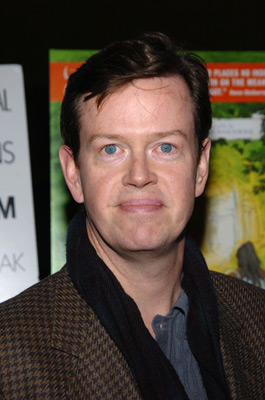
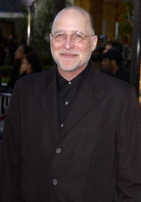
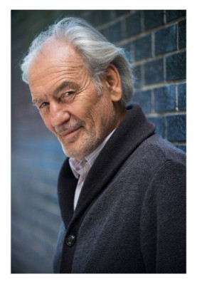
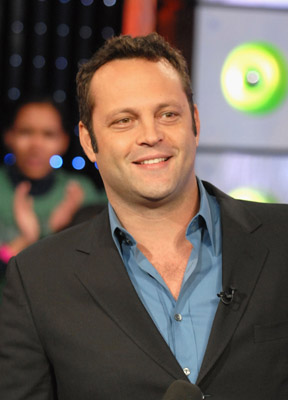
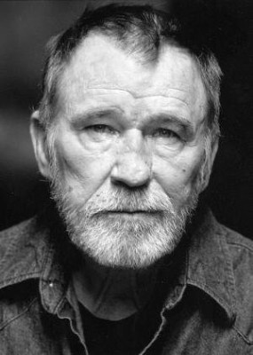
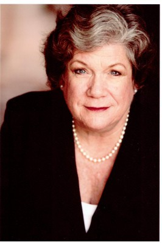
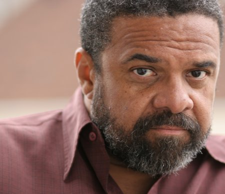
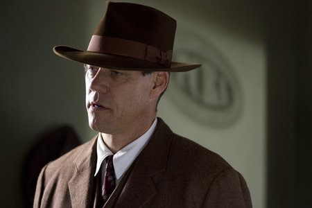
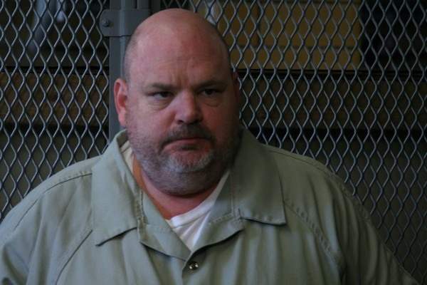

#2712 The Cell
Auszeichnungen: für 1 Oscars nominiert
IMDB-Wertung: 6.3 / 10  Metascore: 40
Metascore: 40 
Der geisteskranke Serienkiller Carl Stargher hat es auf junge Frauen abgesehen. Doch FBI-Agent Peter Novak kommt ihm sehr schnell auf die Spur. Bevor Stargher verraten könnte, wo er sein letztes Opfer gefangen hält, fällt er in eine Art Koma. Novak ist unter Zeitdruck: Sollte er innerhalb der nächsten 40 Stunden die junge Frau nicht finden, wird sie in einer hermetischen Zelle, die über eine Zeitautomatik mit Wasser volläuft, qualvoll ertrinken. Als letzten Ausweg wendet Novak sich an die Psychotherapeutin Catherine Deane. Mit Hilfe einer neuen Methode soll sie in die Gedankenwelt des Killers eintauchen, um dort nach Hinweisen auf das Versteck zu suchen. Catherine gerät dabei jedoch in eine Alptraumwelt von so monströsen Ausmaßen, dass sie bald selbst nicht mehr zwischen virtueller und tatsächlicher Wirklichkeit unterscheiden kann. Und schließlich stellt sie fest, dass Stargher sie in seiner kranken Phantasie bereits längst erwartet hat.
Jahr: 2000
Dauer: 109 Minuten
FSK: 18
Land: USA Studio: New Line CinemaTonspuren: DD5.1 - ,
Untertitel:
Auflösung: 1080p (1920x800) Größe: 5939 MB
Genre: Thriller, Horror, Sci-Fi
Regisseur:  Tarsem Singh
Tarsem Singh
Drehbuch: Mark Protosevich
Soundtrack: Howard Shore
Darsteller:
- Jennifer Lopez als Catherine Deane
- Colton James als Edward Baines
-  Dylan Baker als Henry West
 Marianne Jean-Baptiste als Dr. Miriam Kent
Marianne Jean-Baptiste als Dr. Miriam Kent-  Gerry Becker als Dr. Barry Cooperman
- Musetta Vander als Ella Baines
-  Patrick Bauchau als Lucien Baines
 Vincent D'Onofrio als Carl Stargher
Vincent D'Onofrio als Carl Stargher- Catherine Sutherland als Anne Marie Vicksey
-  Vince Vaughn als Peter Novak
-  James Gammon als Teddy Lee
 Jake Weber als Gordon Ramsey
Jake Weber als Gordon Ramsey Dean Norris als Cole
Dean Norris als Cole- Tara Subkoff als Julia Hickson
-  Lauri Johnson als Mrs. Hickson
-  John Cothran als Agent Stockwell
-  Jack Conley als Agent Brock
- Kamar de los Reyes als Officer Alexander
-  Pruitt Taylor Vince als Dr. Reid
- Jake Thomas als Young Carl Stargher
- Alanna Vicente als Stargher's Victim
- Vanessa Branch als Stargher's Victim
- Gareth Williams als Stargher's Father
- Monica Lacy als Mother
- Leanna Creel als Mother
- Alan D. Purwin als Helicopter Pilot
- Calvi Pabon als Dream Girl , uncredited
 Peter Sarsgaard als Julia Hickson's Fiancee , uncredited
Peter Sarsgaard als Julia Hickson's Fiancee , uncredited- Christopher Janney als Swat Team Member
- Nicholas Cascone als FBI Technician
- Joe La Piana als FBI K-9 Agent
- Kim Chizevsky-Nicholls als Stargher's Victim
- Jennifer Day als Stargher's Victim
- Aja Echols als Stargher's Victim
- Elena Maddalo als Stargher's Victim
- Glenda Chism als Woman in Tub
- Joy Creel als Mother
- Tim als Valentine
- Roger Ferreira als Sheiff , uncredited
Datei: X:\FSK18-2000-2009\Cell, The (2000, FSK18, 1920x800).mkv seit 05.12.2015
Festplatte: FSK18
Es gibt insgesamt 106 Filme in der Gruppe 'FSK18-2000-2009'